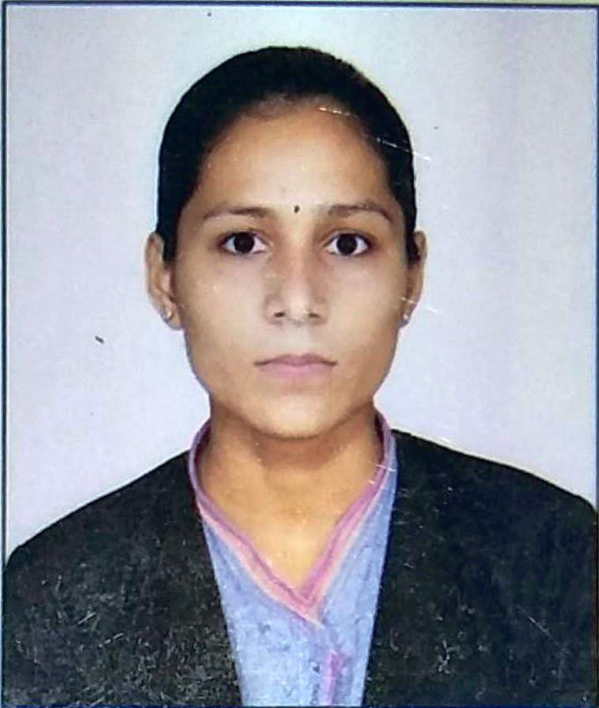

|  | Pooja OjhaJava Full Stack Developer Hyderabad,india | info@yonosys.com | yonosys.com |
Aug 2024 - Present Hyderabad
A Calculator was developed to slove
arithmetic function using js knowledge
Language used:
Followed Software Development Life Cycle process